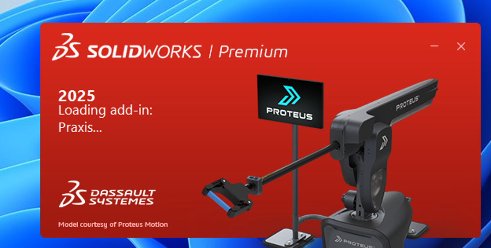
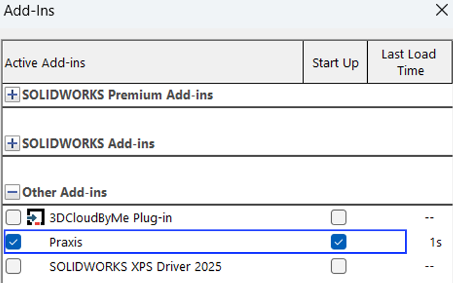

Telepítés
|
Kötelező követelmények
A TruSmartCAM desktop-ba való bejelentkezés kötelező a SolidWorks első indításakor. Győződjön meg arról, hogy a TruSmartCAM figyelő fut a Windows értesítési területén. Ha a TruSmartCAM desktop nincs megnyitva, ellenőrizze, hogy a TruSmartCAM szerver szolgáltatás fut-e, hogy a SolidWorks bővítmény működhessen. Ha mindkettő inaktív, a SolidWorks hibaüzenetet jelenít meg az indításkor. 
|
Kövesse az alábbi lépéseket a TruSmartCAM bővítmény telepítéséhez és beállításához a SolidWorks számára:
-
Futtassa a TruSmartCAM telepítőt, és az Összetevők kiválasztása oldalon engedélyezze a SolidWorks Extension lehetőséget. (Hagyja ki a Server opciót, ha a SolidWorks egy TruSmartCAM kliensen van telepítve.)

-
Fejezze be a telepítést, majd indítsa el a TruSmartCAM desktop-ot és jelentkezzen be érvényes felhasználói hitelesítő adatokkal.

-
Indítsa el a SolidWorks-öt.

-
A SolidWorks-ben lépjen a Tools → TruSmartCAM → About TruSmartCAM menüpontra a bővítmény verziójának és részleteinek ellenőrzéséhez.

-
A bővítmény indításkori engedélyezéséhez vagy letiltásához lépjen a Tools → Add-ins menüpontra, és keresse meg a TruSmartCAM elemet az Other Add-ins alatt.
